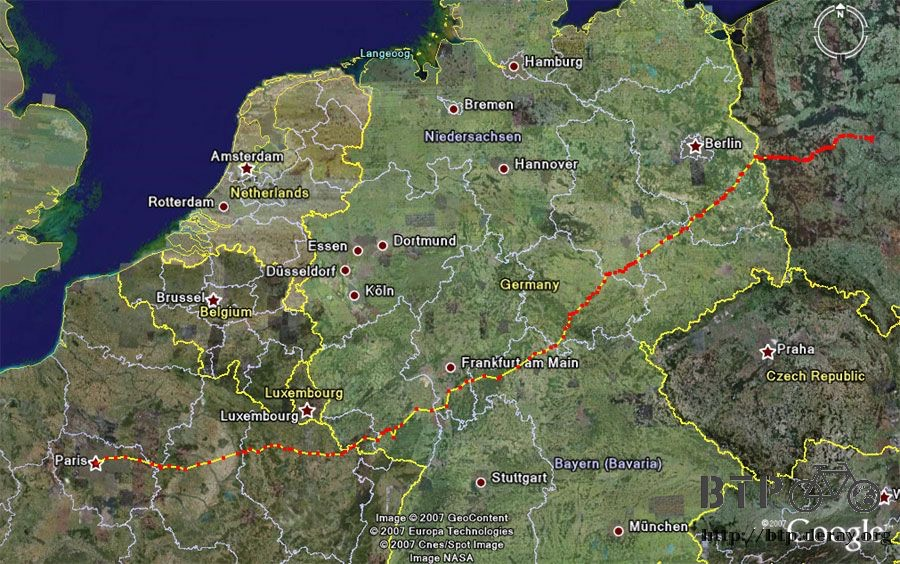
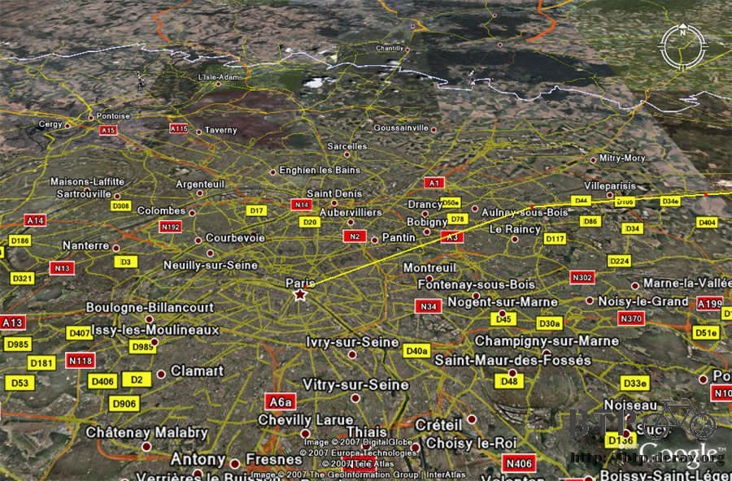
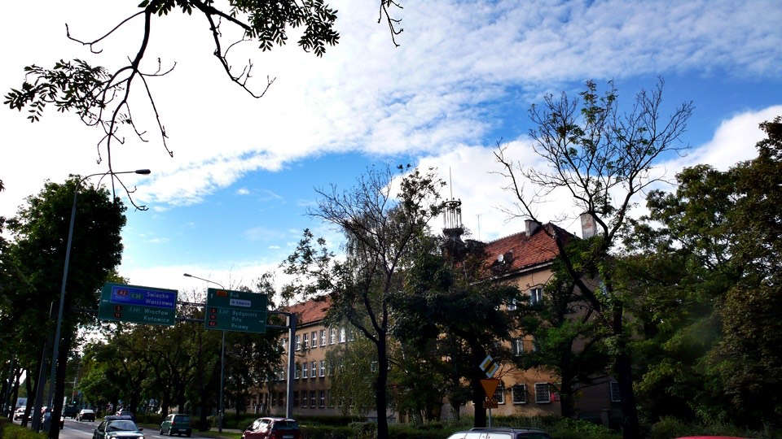
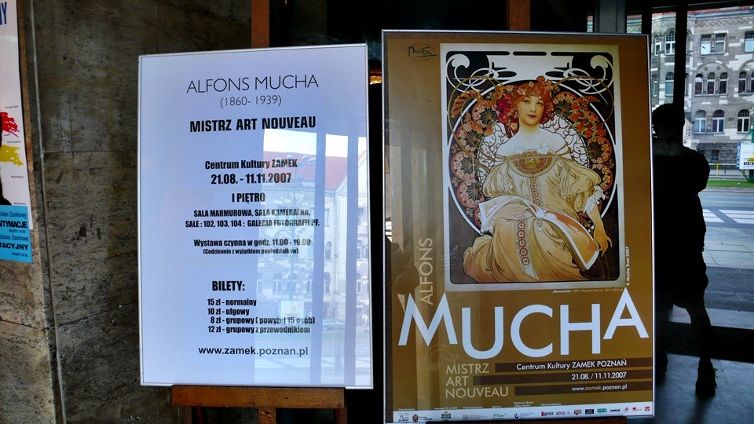
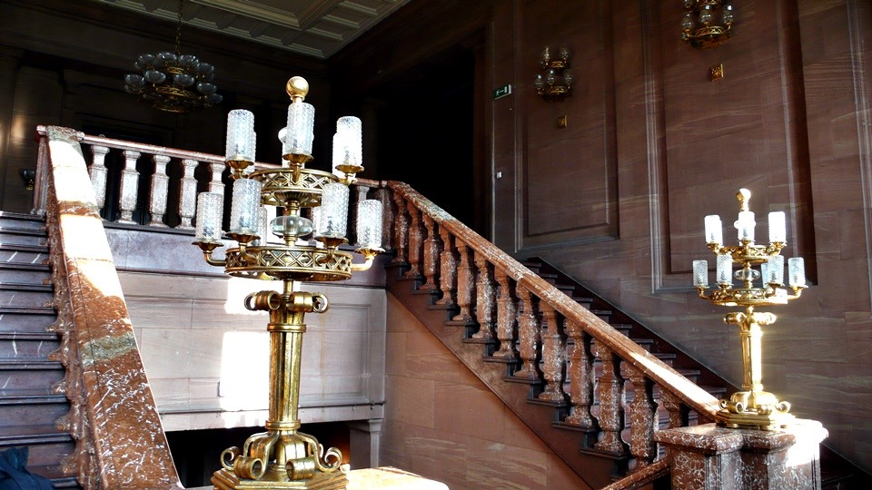
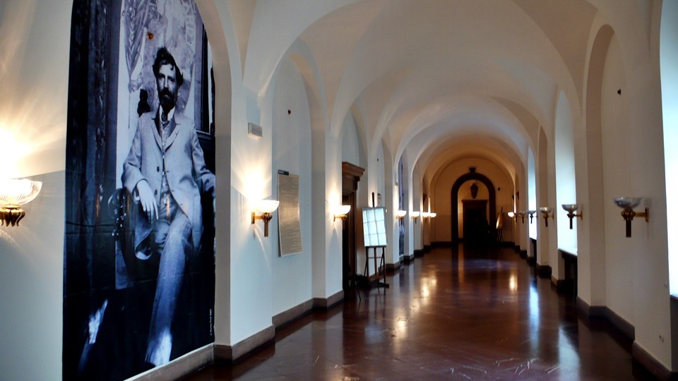
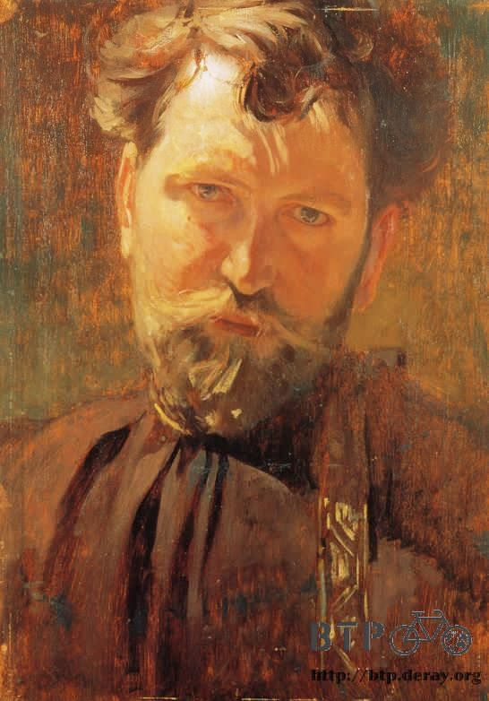
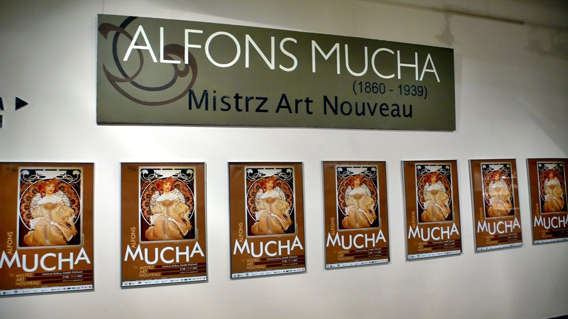
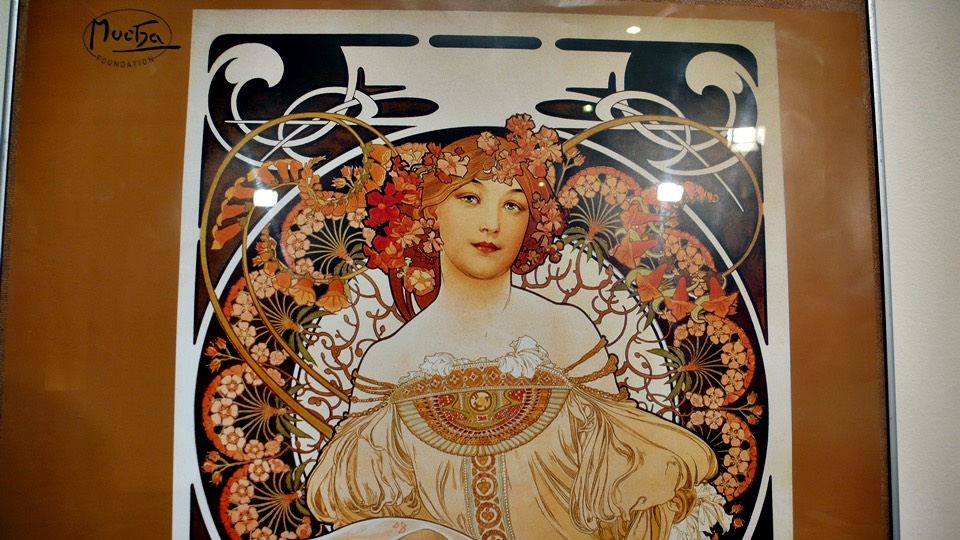

I had walked at lot while at the zoo yesterday.
So today, other than going to Mucha’s art exhibit later in the afternoon,
I plan to stay in the dorm all day.
Before I left for the art exhibit, I planned out which route I need to take for the rest of the trip from Germany to Paris.
I decided I am not going to pass through Netherlands and Belgium this time.
In reality, I can still go through those 2 countries,
which adds 2 more countries to my list of the ones I have already passed.
However, unlike Taiwan tourist groups, which uses the number of passing by countries as an advertisement.
I feel quality is better than quantity. Both Netherlands and Belgium are beautiful countries.
Riding my bike, I can pass those countries in about 2-3 days.
But I wouldn’t be able to enjoy the beautiful scenery along the way.
Rather than passing by quickly this time, I would rather take time on future trips to really enjoy those countries.
This is the route I plan to take:

I plan to take 1-2 days to ride to the Poland and Germany border.
I won’t be going into Berlin because I would get lost in there.
I would ride in the southwest direction, avoiding all freeways with the blue signs.
Maybe I will pass through Frankfurt and enter France right under Luxembourg.
Then I may go a little bit into the Alps, directly riding west into Paris.
That is, if everything goes the way I planned it. I just have about 1300km (808 miles) left.
It is a lot less than the 2000km or so I had thought.
This makes me wonder if there is something wrong in my estimation.
Even if I ride slowly the rest of the way, the trip would end in about 2 weeks.
If no accidents happen, I should be in Paris by September 15th.

I plan to take 1-2 days to ride to the Poland and Germany border.
I won’t be going into Berlin because I would get lost in there.
I would ride in the southwest direction, avoiding all freeways with the blue signs.
Maybe I will pass through Frankfurt and enter France right under Luxembourg.
Then I may go a little bit into the Alps, directly riding west into Paris.
That is, if everything goes the way I planned it. I just have about 1300km (808 miles) left.
It is a lot less than the 2000km or so I had thought.
This makes me wonder if there is something wrong in my estimation.
Even if I ride slowly the rest of the way, the trip would end in about 2 weeks.
If no accidents happen, I should be in Paris by September 15th.
Before I left for my trip, I had planned to stay in hotels once I enter Europe.
This is because there are lots of hotels along the way.
There is no worry about safety, and the weather will also be nice.
However, due to trying to save money, it is getting difficult to find places to camp for the night.
It doesn’t feel great to get kicked out of my camping sites. I am hoping this won’t happen again.
Also, it is getting into September, so the temperature in Europe is getting lower every day.
It is a good thing I won’t be here during the winter time.
After my afternoon meal I left for the art exhibit. I feel a bit dizzy after being inside all day long.
There should be good weather for another week.
I hope I can still get this good weather all the way to Paris.

I walked a little to the castle where the exhibit was displayed at after taking the cable car first.
The ticket at the art exhibit only cost 10 ZLIT for students.
The exhibit is available from 11am to 7pm. Apparently Mucha is a very famous artist.
I guess the reason I have never heard of him is because my lack of knowledge.
I feel very fortunate to be able to see this artist’s work that is done over 100 years ago

It seems like every country pronounces Mucha’s name differently.
I heard Musha, Muha, and Muka today.
It is strange his name is pronounced differently, so I just use the original name, Mucha.
The display is inside the castle. It is very elegant in there.
The bright lights and the overall construction of the castle make the whole visit very comforting.
There aren’t a lot of people here, so I feel even more comfortable looking at the exhibit.
This is the marble staircase inside the castle. The exhibit is separate into 3 halls.
Before I enter each hall, the staff would tear a little corner piece off my ticket.

Mucha is a very famous artist from Moravia in the former Austrian Empire.
He was born in the town of Ivancice.
Most of his works are females, using beautiful scenery as the background.
His brush strokes are very fine, the colors are soft.
With my untrained eye, when I first look at his work I felt the pictures looks like female cartoon.
Then I feel the pictures look a bit like Japanese anime, similar to this Japanese artist, Otomo Katsuhiro’s, work.
Most of Mucha’s work on display here are the ones around 1900s, some even earlier than that.
Even though the art works are over 100 years old, the paintings are still very colorful.

Here is a picture of Mucha on the wall.
After looking at his picture, I am impressed with the fine details of his art work.
Here is Mucha’s self portrait.

Entrance to the exhibit.

The entrance is covered with posters; this artwork seems to be the main representative of Mucha’s work.
There are around 200 of his work on display here.
After looking at all his other artworks, I feel there are other works that are worth seeing than this one.

Not only does this picture shows Mucha’s style and specialty,
his work sums up the foundation of his work which I am very impressed with.
Mucha not only painted, he also did fresco.
Mucha also designed coins, pins, posters for operas,
menu for restaurants, and advertisement for hot chocolate.
As expected, I can not take photos in the exhibit.
Here is a link for the exhibit : http://www.abcgallery.com/M/mucha/mucha.html
If looking at the online photos isn’t enough, you can purchase Mucha’s art picture album in large bookstores.
Really, I am not very familiar with artwork so I have never heard of this great artist’s name.
The exhibit store also sells some little things such as cards and calendars.
Because I wasn’t able to take photos in the exhibit, I bought 3 bookmarks.
In the exhibit there is a large painting of the Red Square done in 1914 when Mucha was in Moscow.
In the picture, I can see the onion shaped domes of The Cathedral of St. Basil.
Back then, the Red Square was a bazaar.
Since I had just passed by Moscow, I feel this picture is particular special.
I was able to stand at the same location 100 years later looking at the same scenery,
except now the peddlers became tourist taking photos.
One thing about Mucha’s work is they are all very large.
Very many of the art pieces use large rectangular frames.
Then Mucha uses the canvas to draw even more beautiful frames.
This makes me feel that the character in the art will pass through time and walk out at any moment.
Looking at those arts, it is hard to believe they are done by hand.
The lines are very fine, and the most impressive thing is the use of colors.
This gives life to the art work. Here are some Mucha’s art posted for everyone to enjoy.
I really like one of the arts done in 1886, Mucha was only 26 then.
In the picture there is a guy holding a girl and kidding her forehead.
The girl was startled and dropped the bird seeds in her hand all over the ground.
This particular picture doesn’t look like Mucha’s other famous works with their beautiful color and design.
The characters don’t have the posture or the beautiful face like the other pictures.
This small art piece is only 10 or so cm in length and width.
Yet this small piece touched me the most, I can look at it for a long time.
Too bad the exhibit store doesn’t sell any item with this art on it.
I am hoping I can find a picture album with Mucha’s work in it so I can look at Mucha’s work any time I want to.
On the way to the dorm, dark clouds started gathering again.
It has been like this for several days. During the night time it looks like it will rain but during the day time it is very sunny.
I am leaving Poland tomorrow. I am hoping I will get some good sunny weather.